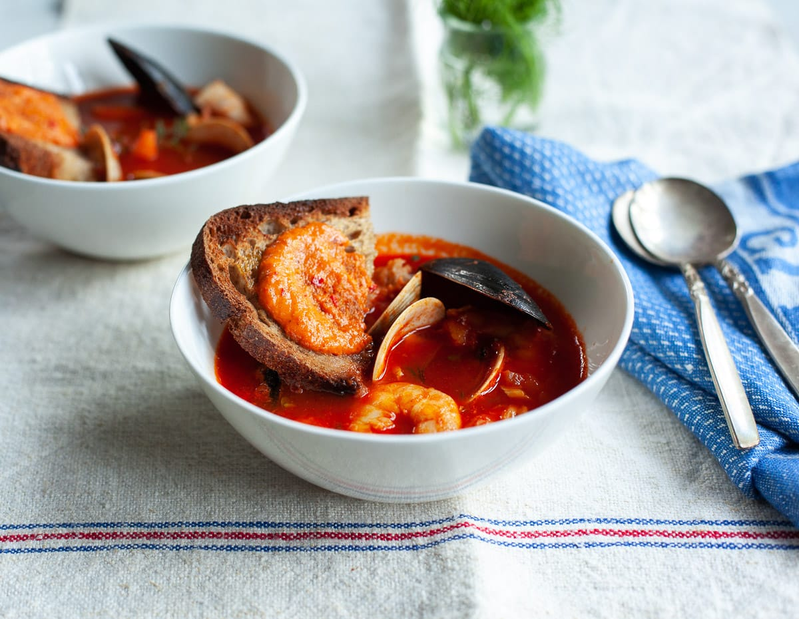

Bouillabaisse
A classic French Seafood Soup

Ingredients
- Mussels
- Clams
- Shrimp
- Flaky White Fish
Steps
- Make a broth, fortified with lots of seafood shells and trimmings (available for a few dollars a pound at your fish counter).
- Add aromatics seasonings, including the typical ingredients of Provencal France: Garlic cloves, saffron threads, fennel bulb, olive oil and tomatoes.
- Simmer the broth for about 30 minutes before adding the shellfish and seafood, which will cook in a matter of minutes.